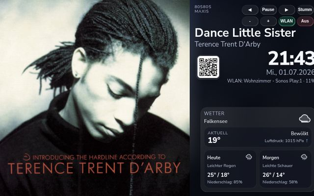
OnRadio Cover Bridge
Raspberry-Pi-Radio mit Albumcover, Titel, Uhrzeit und Wetter auf dem Display. Gesteuert per Handy, abgespielt auf Sonos, Google Cast oder AirPlay.
Ich baue praktische Dinge rund um Home Assistant, Solarstrom, Internetradio und kleine Bastelprojekte mit ESP32 und Raspberry Pi. Alle 19 Projekte sind frei auf GitHub – zum Nachbauen, Anpassen und Verbessern.
In English: Open-source maker projects around Home Assistant, solar power, internet radio, ESP32 and Raspberry Pi. Most projects are documented in English on GitHub.

Raspberry-Pi-Radio mit Albumcover, Titel, Uhrzeit und Wetter auf dem Display. Gesteuert per Handy, abgespielt auf Sonos, Google Cast oder AirPlay.
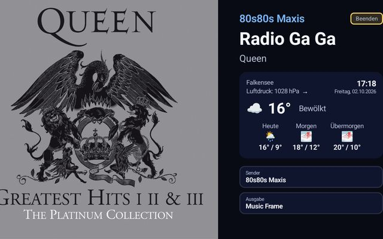
Das gleiche Radioerlebnis als eigenständige App für Google TV und Android TV – ganz ohne Raspberry Pi, mit Ausgabe auf TV, Chromecast oder Sonos.
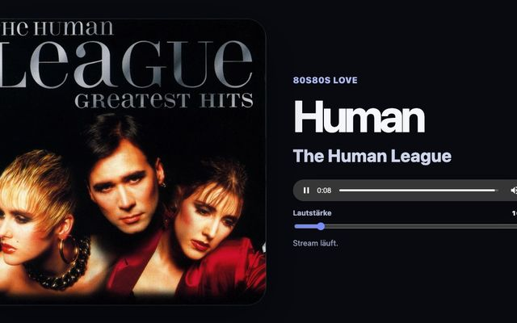
Chrome-Erweiterung für ON Radio und 80s80s: Programmübersicht mit Albumcovern und ein Player-Tab mit großem Cover.
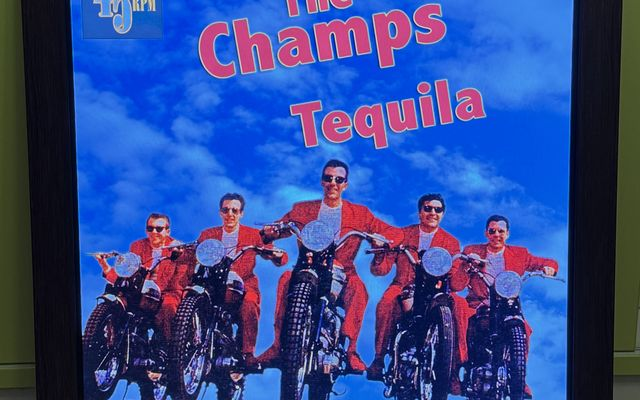
Macht aus einem BBuzzCanvas-Bilderrahmen ein Vollbild-Coverdisplay für die OnRadio Cover Bridge.
Gemeinsamer Senderkatalog für die Radio-Projekte – eine zentrale stations.json, automatisch per GitHub Actions erzeugt.
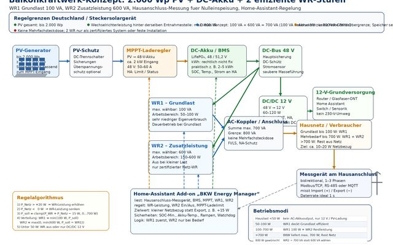
Balkonkraftwerk mit DC-Akku effizienter machen: ein kleiner Wechselrichter für die Grundlast, ein zweiter nur bei Bedarf, geregelt von Home Assistant.
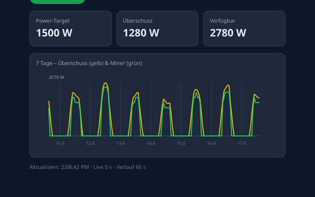
PV-Überschuss statt Einspeisung: Ein Shelly Pro 3EM regelt die Leistung eines Antminers passend zur Sonne – ohne zusätzlichen Rechner.
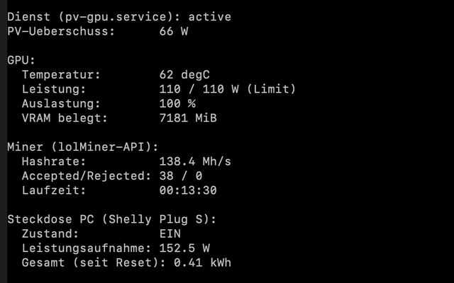
Die PC-Variante: Eine RTX 3070 mit NiceHash läuft nur bei PV-Überschuss, mit Leistungsbegrenzung und Temperaturschutz.
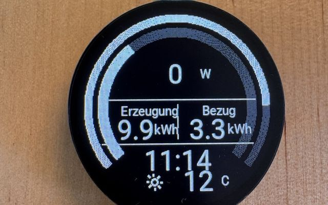
Rundes ESP32-Display zeigt PV-Leistung, Akkustand, Netzbezug, Uhrzeit und Wetter auf einen Blick.
Netzbezug, Einspeisung und PV-Erzeugung per Lesekopf und ESP32 mit Tasmota – kabelgebunden ins Energie-Dashboard von Home Assistant.
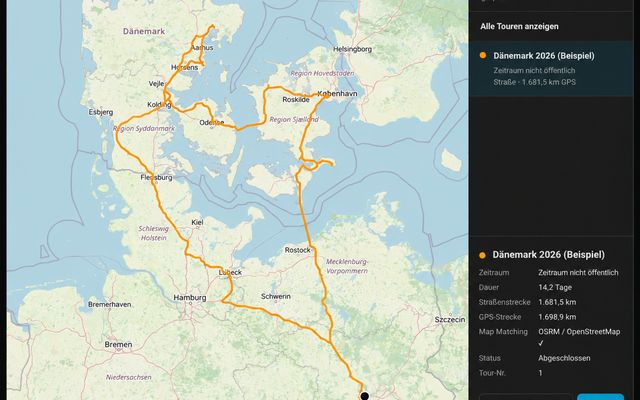
Erkennt Wohnmobil-Reisen automatisch aus GPS-Daten, legt sie auf die Straßenkarte und zeigt alle Touren farbig in Home Assistant.
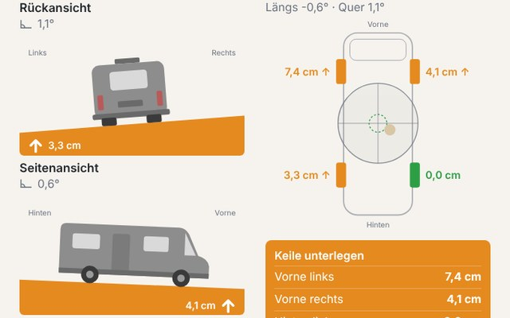
Zeigt in Home Assistant, wie schief das Wohnmobil steht und wie viele Zentimeter Keil unter welches Rad gehören – mit Rück-, Seiten- und Draufsicht.
Bindet den Gewitterwarner GW1 über einen Shelly UNI in Home Assistant ein – mit Dashboard, Blitzrate und Benachrichtigungen.
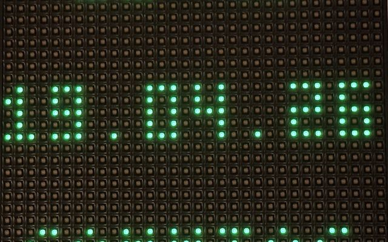
Das günstige 32×32-LED-Panel von ACTION als Infodisplay für Home Assistant: Uhrzeit, Wetter und Sensorwerte in Pixelschrift.
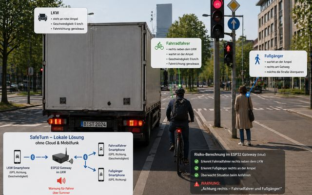
Prototyp einer Abbiegewarnung für LKW: Smartphones von Fahrer und Radfahrer melden ihre Position per Bluetooth an einen ESP32, der rechtzeitig warnt.
„Babyphone für Senioren ohne Bild und Ton“: Sensoren erkennen den Alltag, bleibt Aktivität aus, bekommen Angehörige eine Telegram-Nachricht.
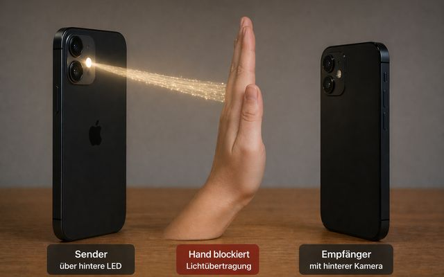
Morsen mit Licht zwischen zwei iPhones – senden per Bildschirm oder LED, empfangen und live entschlüsseln mit der Kamera. Ohne App-Installation.
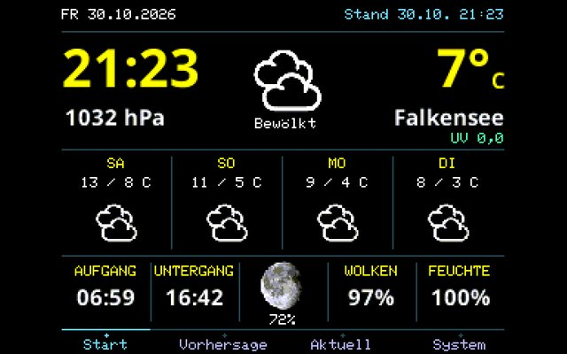
Wetterdisplay auf dem günstigen ESP32 „Cheap Yellow Display“: 2,8-Zoll-Touchscreen mit aktuellem Wetter und Vorhersage, auf Deutsch angepasst.
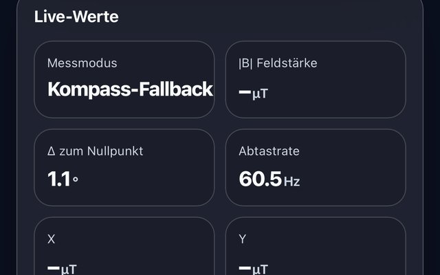
Web-App für einfache Störungstests mit dem Kompass des Smartphones – läuft im Browser, Messwerte bleiben lokal und lassen sich als CSV speichern.
Fehler gefunden oder eine Idee? Auf GitHub kannst du in jedem Projekt ein Issue anlegen. Über einen ⭐ freue ich mich – so finden auch andere die Projekte.
Alle Projekte sind Bastel- und Lernprojekte ohne Gewähr. Arbeiten an der Elektroinstallation gehören in die Hände einer Elektrofachkraft.